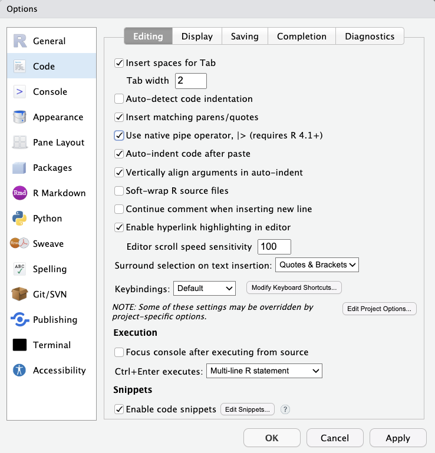
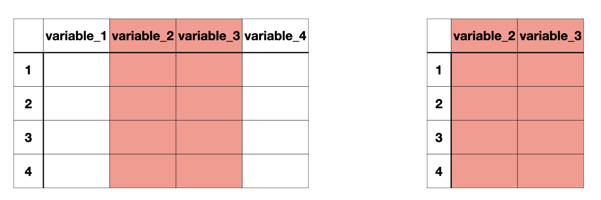
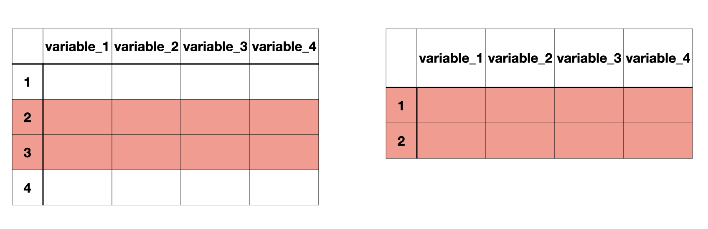
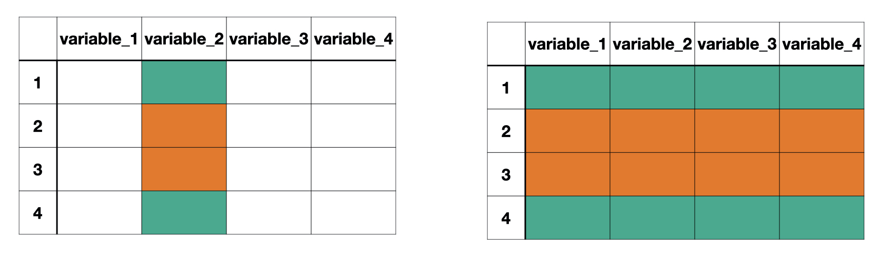

[1] 4 8 16Data Transformations and Aggregations
|>What is the average of 4, 8, 16 approximately?
There are 3 steps we need:
Problem with writing functions within functions:
Problem with creating many objects
Environment. There is a more efficient way to code.Shortcut: <br>Ctrl (Command) + Shift + M
The output of the first function is the first argument of the second function.

Make sure to select Use native pipe operator in RStudio under Tools > Global Options > Code if you installed R a long time ago. %>% is the old pipe.
Notice how the lines we pipe code into are indented.
Now we’ve learned to indent:
We will work with Los Angeles Police Department data
This data is not from an R package, so ?lapd won’t work. The documentation can be found online here.
Rows: 68,564
Columns: 35
$ `Row ID` <chr> "3-1000027830ctFu", "3-1000155488ctFu",…
$ Year <dbl> 2013, 2013, 2013, 2013, 2013, 2013, 201…
$ `Department Title` <chr> "Police (LAPD)", "Police (LAPD)", "Poli…
$ `Payroll Department` <dbl> 4301, 4302, 4301, 4301, 4302, 4302, 430…
$ `Record Number` <dbl> 1000027830, 1000155488, 1000194958, 100…
$ `Job Class Title` <chr> "Police Detective II", "Clerk Typist", …
$ `Employment Type` <chr> "Full Time", "Full Time", "Full Time", …
$ `Hourly or Event Rate` <dbl> 53.16, 23.77, 60.80, 60.98, 45.06, 34.4…
$ `Projected Annual Salary` <dbl> 110998.08, 49623.67, 126950.40, 127326.…
$ `Q1 Payments` <dbl> 24931.20, 11343.96, 24184.00, 29391.20,…
$ `Q2 Payments` <dbl> 29181.61, 13212.37, 28327.20, 36591.20,…
$ `Q3 Payments` <dbl> 26545.80, 11508.36, 28744.20, 32904.81,…
$ `Q4 Payments` <dbl> 29605.30, 13442.53, 33224.88, 37234.03,…
$ `Payments Over Base Pay` <dbl> 4499.12, 1844.82, 13192.43, 18034.53, 1…
$ `% Over Base Pay` <dbl> 0, 0, 0, 0, 0, 0, 0, 0, 0, 0, 0, 0, 0, …
$ `Total Payments` <dbl> 110263.91, 49507.22, 114480.28, 136121.…
$ `Base Pay` <dbl> 105764.79, 47662.40, 101287.85, 118086.…
$ `Permanent Bonus Pay` <dbl> 3174.12, 0.00, 7363.95, 7086.67, 0.00, …
$ `Longevity Bonus Pay` <dbl> 0.00, 1310.82, 0.00, 0.00, 1251.19, 172…
$ `Temporary Bonus Pay` <dbl> 1325.00, 0.00, 1205.00, 1325.00, 125.00…
$ `Lump Sum Pay` <dbl> 0.00, 0.00, 2133.18, 0.00, 2068.80, 0.0…
$ `Overtime Pay` <dbl> 0.00, 0.00, 4424.32, 9839.33, 0.00, 0.0…
$ `Other Pay & Adjustments` <dbl> 0.00, 534.00, -1934.02, -216.47, -2068.…
$ `Other Pay (Payroll Explorer)` <dbl> 4499.12, 1844.82, 8768.11, 8195.20, 137…
$ MOU <chr> "24", "3", "24", "24", "12", "3", "24",…
$ `MOU Title` <chr> "POLICE OFFICERS UNIT", "CLERICAL UNIT"…
$ `FMS Department` <dbl> 70, 70, 70, 70, 70, 70, 70, 70, 70, 70,…
$ `Job Class` <chr> "2223", "1358", "2227", "2232", "1839",…
$ `Pay Grade` <chr> "2", "0", "1", "1", "0", "2", "3", "1",…
$ `Average Health Cost` <dbl> 11651.40, 10710.24, 11651.40, 11651.40,…
$ `Average Dental Cost` <dbl> 898.08, 405.24, 898.08, 898.08, 405.24,…
$ `Average Basic Life` <dbl> 191.04, 11.40, 191.04, 191.04, 11.40, 1…
$ `Average Benefit Cost` <dbl> 12740.52, 11126.88, 12740.52, 12740.52,…
$ `Benefits Plan` <chr> "Police", "City", "Police", "Police", "…
$ `Job Class Link` <chr> "http://per.lacity.org/perspecs/2223.pd…clean_names() from the janitor package makes column names follow tidyverse style!
Rows: 68,564
Columns: 35
$ row_id <chr> "3-1000027830ctFu", "3-1000155488ctFu", "3-…
$ year <dbl> 2013, 2013, 2013, 2013, 2013, 2013, 2013, 2…
$ department_title <chr> "Police (LAPD)", "Police (LAPD)", "Police (…
$ payroll_department <dbl> 4301, 4302, 4301, 4301, 4302, 4302, 4301, 4…
$ record_number <dbl> 1000027830, 1000155488, 1000194958, 1000232…
$ job_class_title <chr> "Police Detective II", "Clerk Typist", "Pol…
$ employment_type <chr> "Full Time", "Full Time", "Full Time", "Ful…
$ hourly_or_event_rate <dbl> 53.16, 23.77, 60.80, 60.98, 45.06, 34.42, 4…
$ projected_annual_salary <dbl> 110998.08, 49623.67, 126950.40, 127326.24, …
$ q1_payments <dbl> 24931.20, 11343.96, 24184.00, 29391.20, 208…
$ q2_payments <dbl> 29181.61, 13212.37, 28327.20, 36591.20, 241…
$ q3_payments <dbl> 26545.80, 11508.36, 28744.20, 32904.81, 215…
$ q4_payments <dbl> 29605.30, 13442.53, 33224.88, 37234.03, 252…
$ payments_over_base_pay <dbl> 4499.12, 1844.82, 13192.43, 18034.53, 1376.…
$ percent_over_base_pay <dbl> 0, 0, 0, 0, 0, 0, 0, 0, 0, 0, 0, 0, 0, 0, 0…
$ total_payments <dbl> 110263.91, 49507.22, 114480.28, 136121.24, …
$ base_pay <dbl> 105764.79, 47662.40, 101287.85, 118086.71, …
$ permanent_bonus_pay <dbl> 3174.12, 0.00, 7363.95, 7086.67, 0.00, 0.00…
$ longevity_bonus_pay <dbl> 0.00, 1310.82, 0.00, 0.00, 1251.19, 1726.16…
$ temporary_bonus_pay <dbl> 1325.00, 0.00, 1205.00, 1325.00, 125.00, 68…
$ lump_sum_pay <dbl> 0.00, 0.00, 2133.18, 0.00, 2068.80, 0.00, 0…
$ overtime_pay <dbl> 0.00, 0.00, 4424.32, 9839.33, 0.00, 0.00, 4…
$ other_pay_adjustments <dbl> 0.00, 534.00, -1934.02, -216.47, -2068.80, …
$ other_pay_payroll_explorer <dbl> 4499.12, 1844.82, 8768.11, 8195.20, 1376.19…
$ mou <chr> "24", "3", "24", "24", "12", "3", "24", "24…
$ mou_title <chr> "POLICE OFFICERS UNIT", "CLERICAL UNIT", "P…
$ fms_department <dbl> 70, 70, 70, 70, 70, 70, 70, 70, 70, 70, 70,…
$ job_class <chr> "2223", "1358", "2227", "2232", "1839", "22…
$ pay_grade <chr> "2", "0", "1", "1", "0", "2", "3", "1", "B"…
$ average_health_cost <dbl> 11651.40, 10710.24, 11651.40, 11651.40, 107…
$ average_dental_cost <dbl> 898.08, 405.24, 898.08, 898.08, 405.24, 405…
$ average_basic_life <dbl> 191.04, 11.40, 191.04, 191.04, 11.40, 11.40…
$ average_benefit_cost <dbl> 12740.52, 11126.88, 12740.52, 12740.52, 111…
$ benefits_plan <chr> "Police", "City", "Police", "Police", "City…
$ job_class_link <chr> "http://per.lacity.org/perspecs/2223.pdf", …
We can extract specific columns using select().
select()Example use 1 (without pipes):
select()We will typically have multiple data cleaning steps, so we will typically use pipes
select() can also be used to drop variables with a ! outside of a vector of column names to be omitted
# A tibble: 68,564 × 33
year payroll_department record_number job_class_title employment_type
<dbl> <dbl> <dbl> <chr> <chr>
1 2013 4301 1000027830 Police Detective II Full Time
2 2013 4302 1000155488 Clerk Typist Full Time
3 2013 4301 1000194958 Police Sergeant I Full Time
4 2013 4301 1000232317 Police Lieutenant I Full Time
5 2013 4302 1000329284 Principal Storekeeper Full Time
6 2013 4302 1001124320 Police Service Repres… Full Time
7 2013 4301 1001221822 Police Officer III Full Time
8 2013 4301 1001243583 Police Sergeant I Full Time
9 2013 4301 1001317832 Police Officer II Full Time
10 2013 4301 100162910 Police Officer II Full Time
# ℹ 68,554 more rows
# ℹ 28 more variables: hourly_or_event_rate <dbl>,
# projected_annual_salary <dbl>, q1_payments <dbl>, q2_payments <dbl>,
# q3_payments <dbl>, q4_payments <dbl>, payments_over_base_pay <dbl>,
# percent_over_base_pay <dbl>, total_payments <dbl>, base_pay <dbl>,
# permanent_bonus_pay <dbl>, longevity_bonus_pay <dbl>,
# temporary_bonus_pay <dbl>, lump_sum_pay <dbl>, overtime_pay <dbl>, …
Row-wise subsetting can be done with slice() and filter()
slice()slice() subsets rows based on row number(s).
# A tibble: 1 × 35
row_id year department_title payroll_department record_number job_class_title
<chr> <dbl> <chr> <dbl> <dbl> <chr>
1 3-100… 2013 Police (LAPD) 4301 1000194958 Police Sergean…
# ℹ 29 more variables: employment_type <chr>, hourly_or_event_rate <dbl>,
# projected_annual_salary <dbl>, q1_payments <dbl>, q2_payments <dbl>,
# q3_payments <dbl>, q4_payments <dbl>, payments_over_base_pay <dbl>,
# percent_over_base_pay <dbl>, total_payments <dbl>, base_pay <dbl>,
# permanent_bonus_pay <dbl>, longevity_bonus_pay <dbl>,
# temporary_bonus_pay <dbl>, lump_sum_pay <dbl>, overtime_pay <dbl>,
# other_pay_adjustments <dbl>, other_pay_payroll_explorer <dbl>, mou <chr>, …| Operator | Description |
|---|---|
| < | Less than |
| > | Greater than |
| <= | Less than or equal to |
| >= | Greater than or equal to |
| == | Equal to |
| != | Not equal to |
| Operator | Description |
|---|---|
| & | and |
| | | or |
filter()filter() subsets rows based on a condition.
The data below includes rows when the recorded year is 2018.
# A tibble: 14,824 × 35
row_id year department_title payroll_department record_number
<chr> <dbl> <chr> <dbl> <dbl>
1 8-1000027830ctFu 2018 Police (LAPD) 4301 1000027830
2 8-1000194958ctFu 2018 Police (LAPD) 4301 1000194958
3 8-1000232317ctFu 2018 Police (LAPD) 4301 1000232317
4 8-1001124320ctFu 2018 Police (LAPD) 4302 1001124320
5 8-1001221822ctFu 2018 Police (LAPD) 4301 1001221822
6 8-1001317832ctFu 2018 Police (LAPD) 4301 1001317832
7 8-100162910ctFu 2018 Police (LAPD) 4301 100162910
8 8-1001675957ctFu 2018 Police (LAPD) 4301 1001675957
9 8-1001884819ctFu 2018 Police (LAPD) 4302 1001884819
10 8-1001893163ctFu 2018 Police (LAPD) 4302 1001893163
# ℹ 14,814 more rows
# ℹ 30 more variables: job_class_title <chr>, employment_type <chr>,
# hourly_or_event_rate <dbl>, projected_annual_salary <dbl>,
# q1_payments <dbl>, q2_payments <dbl>, q3_payments <dbl>, q4_payments <dbl>,
# payments_over_base_pay <dbl>, percent_over_base_pay <dbl>,
# total_payments <dbl>, base_pay <dbl>, permanent_bonus_pay <dbl>,
# longevity_bonus_pay <dbl>, temporary_bonus_pay <dbl>, lump_sum_pay <dbl>, …How many LAPD staff members had a base pay higher than $100,000 in 2018 according to this data?
# A tibble: 6,499 × 35
row_id year department_title payroll_department record_number
<chr> <dbl> <chr> <dbl> <dbl>
1 8-1000027830ctFu 2018 Police (LAPD) 4301 1000027830
2 8-1000194958ctFu 2018 Police (LAPD) 4301 1000194958
3 8-1000232317ctFu 2018 Police (LAPD) 4301 1000232317
4 8-1001221822ctFu 2018 Police (LAPD) 4301 1001221822
5 8-1001945123ctFu 2018 Police (LAPD) 4301 1001945123
6 8-1002130218ctFu 2018 Police (LAPD) 4301 1002130218
7 8-1002409510ctFu 2018 Police (LAPD) 4301 1002409510
8 8-100305817ctFu 2018 Police (LAPD) 4302 100305817
9 8-100309798ctFu 2018 Police (LAPD) 4301 100309798
10 8-1003303056ctFu 2018 Police (LAPD) 4301 1003303056
# ℹ 6,489 more rows
# ℹ 30 more variables: job_class_title <chr>, employment_type <chr>,
# hourly_or_event_rate <dbl>, projected_annual_salary <dbl>,
# q1_payments <dbl>, q2_payments <dbl>, q3_payments <dbl>, q4_payments <dbl>,
# payments_over_base_pay <dbl>, percent_over_base_pay <dbl>,
# total_payments <dbl>, base_pay <dbl>, permanent_bonus_pay <dbl>,
# longevity_bonus_pay <dbl>, temporary_bonus_pay <dbl>, lump_sum_pay <dbl>, …How many LAPD staff members had a base pay higher than $100,000 in 2018 according to this data?
How many observations are available between 2013 and 2015 including 2013 and 2015?
# A tibble: 40,227 × 35
row_id year department_title payroll_department record_number
<chr> <dbl> <chr> <dbl> <dbl>
1 3-1000027830ctFu 2013 Police (LAPD) 4301 1000027830
2 3-1000155488ctFu 2013 Police (LAPD) 4302 1000155488
3 3-1000194958ctFu 2013 Police (LAPD) 4301 1000194958
4 3-1000232317ctFu 2013 Police (LAPD) 4301 1000232317
5 3-1000329284ctFu 2013 Police (LAPD) 4302 1000329284
6 3-1001124320ctFu 2013 Police (LAPD) 4302 1001124320
7 3-1001221822ctFu 2013 Police (LAPD) 4301 1001221822
8 3-1001243583ctFu 2013 Police (LAPD) 4301 1001243583
9 3-1001317832ctFu 2013 Police (LAPD) 4301 1001317832
10 3-100162910ctFu 2013 Police (LAPD) 4301 100162910
# ℹ 40,217 more rows
# ℹ 30 more variables: job_class_title <chr>, employment_type <chr>,
# hourly_or_event_rate <dbl>, projected_annual_salary <dbl>,
# q1_payments <dbl>, q2_payments <dbl>, q3_payments <dbl>, q4_payments <dbl>,
# payments_over_base_pay <dbl>, percent_over_base_pay <dbl>,
# total_payments <dbl>, base_pay <dbl>, permanent_bonus_pay <dbl>,
# longevity_bonus_pay <dbl>, temporary_bonus_pay <dbl>, lump_sum_pay <dbl>, …How many observations are available between 2013 and 2015 including 2013 and 2015?
How many LAPD staff were employed full time in 2018?
We have done all sorts of selections, slicing, filtering on lapd but it has not changed at all. Why do you think so?
Rows: 68,564
Columns: 35
$ row_id <chr> "3-1000027830ctFu", "3-1000155488ctFu", "3-…
$ year <dbl> 2013, 2013, 2013, 2013, 2013, 2013, 2013, 2…
$ department_title <chr> "Police (LAPD)", "Police (LAPD)", "Police (…
$ payroll_department <dbl> 4301, 4302, 4301, 4301, 4302, 4302, 4301, 4…
$ record_number <dbl> 1000027830, 1000155488, 1000194958, 1000232…
$ job_class_title <chr> "Police Detective II", "Clerk Typist", "Pol…
$ employment_type <chr> "Full Time", "Full Time", "Full Time", "Ful…
$ hourly_or_event_rate <dbl> 53.16, 23.77, 60.80, 60.98, 45.06, 34.42, 4…
$ projected_annual_salary <dbl> 110998.08, 49623.67, 126950.40, 127326.24, …
$ q1_payments <dbl> 24931.20, 11343.96, 24184.00, 29391.20, 208…
$ q2_payments <dbl> 29181.61, 13212.37, 28327.20, 36591.20, 241…
$ q3_payments <dbl> 26545.80, 11508.36, 28744.20, 32904.81, 215…
$ q4_payments <dbl> 29605.30, 13442.53, 33224.88, 37234.03, 252…
$ payments_over_base_pay <dbl> 4499.12, 1844.82, 13192.43, 18034.53, 1376.…
$ percent_over_base_pay <dbl> 0, 0, 0, 0, 0, 0, 0, 0, 0, 0, 0, 0, 0, 0, 0…
$ total_payments <dbl> 110263.91, 49507.22, 114480.28, 136121.24, …
$ base_pay <dbl> 105764.79, 47662.40, 101287.85, 118086.71, …
$ permanent_bonus_pay <dbl> 3174.12, 0.00, 7363.95, 7086.67, 0.00, 0.00…
$ longevity_bonus_pay <dbl> 0.00, 1310.82, 0.00, 0.00, 1251.19, 1726.16…
$ temporary_bonus_pay <dbl> 1325.00, 0.00, 1205.00, 1325.00, 125.00, 68…
$ lump_sum_pay <dbl> 0.00, 0.00, 2133.18, 0.00, 2068.80, 0.00, 0…
$ overtime_pay <dbl> 0.00, 0.00, 4424.32, 9839.33, 0.00, 0.00, 4…
$ other_pay_adjustments <dbl> 0.00, 534.00, -1934.02, -216.47, -2068.80, …
$ other_pay_payroll_explorer <dbl> 4499.12, 1844.82, 8768.11, 8195.20, 1376.19…
$ mou <chr> "24", "3", "24", "24", "12", "3", "24", "24…
$ mou_title <chr> "POLICE OFFICERS UNIT", "CLERICAL UNIT", "P…
$ fms_department <dbl> 70, 70, 70, 70, 70, 70, 70, 70, 70, 70, 70,…
$ job_class <chr> "2223", "1358", "2227", "2232", "1839", "22…
$ pay_grade <chr> "2", "0", "1", "1", "0", "2", "3", "1", "B"…
$ average_health_cost <dbl> 11651.40, 10710.24, 11651.40, 11651.40, 107…
$ average_dental_cost <dbl> 898.08, 405.24, 898.08, 898.08, 405.24, 405…
$ average_basic_life <dbl> 191.04, 11.40, 191.04, 191.04, 11.40, 11.40…
$ average_benefit_cost <dbl> 12740.52, 11126.88, 12740.52, 12740.52, 111…
$ benefits_plan <chr> "Police", "City", "Police", "Police", "City…
$ job_class_link <chr> "http://per.lacity.org/perspecs/2223.pdf", …Moving forward we are only going to focus on year 2018, and use job_class_title, employment_type, and base_pay.
Let’s clean our data accordingly and move on with the smaller lapd data that we need.
# A tibble: 14,824 × 3
job_class_title employment_type base_pay
<chr> <chr> <dbl>
1 Police Detective II Full Time 119322.
2 Police Sergeant I Full Time 113271.
3 Police Lieutenant II Full Time 148116
4 Police Service Representative II Full Time 78677.
5 Police Officer III Full Time 109374.
6 Police Officer II Full Time 95002.
7 Police Officer II Full Time 95379.
8 Police Officer II Full Time 95388.
9 Equipment Mechanic Full Time 80496
10 Detention Officer Full Time 69640
# ℹ 14,814 more rowslapd <-
lapd |>
1 filter(year == 2018) |>
select(
job_class_title,
employment_type,
base_pay
)lapd object, instead of just being printed.
mutate()The mutate() function allows us to:
Create a new variable called base_pay_k that represents base_pay in thousand dollars.
# A tibble: 14,824 × 4
job_class_title employment_type base_pay base_pay_k
<chr> <chr> <dbl> <dbl>
1 Police Detective II Full Time 119322. 119.
2 Police Sergeant I Full Time 113271. 113.
3 Police Lieutenant II Full Time 148116 148.
4 Police Service Representative II Full Time 78677. 78.7
5 Police Officer III Full Time 109374. 109.
6 Police Officer II Full Time 95002. 95.0
7 Police Officer II Full Time 95379. 95.4
8 Police Officer II Full Time 95388. 95.4
9 Equipment Mechanic Full Time 80496 80.5
10 Detention Officer Full Time 69640 69.6
# ℹ 14,814 more rowscase_when()Create a new variable called base_pay_level which has Less Than 0, No Income, Between 0 and 100K and 100K Plus.
# A tibble: 14,824 × 4
job_class_title employment_type base_pay base_pay_level
<chr> <chr> <dbl> <chr>
1 Police Detective II Full Time 119322. 100K Plus
2 Police Sergeant I Full Time 113271. 100K Plus
3 Police Lieutenant II Full Time 148116 100K Plus
4 Police Service Representative II Full Time 78677. Between 0 and 100K
5 Police Officer III Full Time 109374. 100K Plus
6 Police Officer II Full Time 95002. Between 0 and 100K
7 Police Officer II Full Time 95379. Between 0 and 100K
8 Police Officer II Full Time 95388. Between 0 and 100K
9 Equipment Mechanic Full Time 80496 Between 0 and 100K
10 Detention Officer Full Time 69640 Between 0 and 100K
# ℹ 14,814 more rowsWe can use pipes with ggplot too!
Remember when we identified if the R storage types were appropriate for the variable type? Now we have the power to change the R storage type!
as.factor() - makes a vector factor
as.numeric() - makes a vector numeric
as.integer() - makes a vector integer
as.double() - makes a vector double
as.character() - makes a vector character
Make job_class_title and employment_type factor variables.
# A tibble: 14,824 × 3
job_class_title employment_type base_pay
<fct> <fct> <dbl>
1 Police Detective II Full Time 119322.
2 Police Sergeant I Full Time 113271.
3 Police Lieutenant II Full Time 148116
4 Police Service Representative II Full Time 78677.
5 Police Officer III Full Time 109374.
6 Police Officer II Full Time 95002.
7 Police Officer II Full Time 95379.
8 Police Officer II Full Time 95388.
9 Equipment Mechanic Full Time 80496
10 Detention Officer Full Time 69640
# ℹ 14,814 more rowsOnce again we did not “save” anything into lapd.
You can do all the changes in this lecture in one long set of piped code. That’s the beauty of piping!
lapd <-
lapd |>
clean_names() |>
filter(year == 2018) |>
select(
job_class_title,
employment_type,
base_pay
) |>
mutate(
employment_type = as.factor(employment_type),
job_class_title = as.factor(job_class_title),
base_pay_level = case_when(
base_pay < 0 ~ "Less than 0",
base_pay == 0 ~ "No Income",
base_pay < 100000 & base_pay > 0 ~ "Between 0 and 100K",
base_pay > 100000 ~ "Greater than 100K"
)
) Warning
The functions clean_names(), select(), filter(), mutate() all take a data frame as the first argument. Even though we do not see it, the data frame is piped through from the previous step of code at each step. When we use these functions without the |> we have to include the data frame explicitly.
Categorical data are summarized with counts or proportions.
Mean, median, standard deviation, variance, and quartiles are some of the numerical summaries of numerical variables. Recall
group_by()
group_by() separates the data frame by the groups. Any action following group_by() will be completed for each group separately.
summarize()group_by() example questionQ. What is the median salary for each employment type?
group_by() example alone# A tibble: 14,824 × 3
# Groups: employment_type [3]
job_class_title employment_type base_pay
<chr> <chr> <dbl>
1 Police Detective II Full Time 119322.
2 Police Sergeant I Full Time 113271.
3 Police Lieutenant II Full Time 148116
4 Police Service Representative II Full Time 78677.
5 Police Officer III Full Time 109374.
6 Police Officer II Full Time 95002.
7 Police Officer II Full Time 95379.
8 Police Officer II Full Time 95388.
9 Equipment Mechanic Full Time 80496
10 Detention Officer Full Time 69640
# ℹ 14,814 more rowsgroup_by() is used alonegroup_by() example with summarize()# A tibble: 3 × 2
employment_type med_base_pay
<chr> <dbl>
1 Full Time 97996.
2 Part Time 14474.
3 Per Event 4275 We can also remind ourselves how many staff members there were in each group.
# A tibble: 3 × 3
employment_type med_base_pay count
<chr> <dbl> <int>
1 Full Time 97996. 14664
2 Part Time 14474. 132
3 Per Event 4275 28Note that n() does not take any arguments.